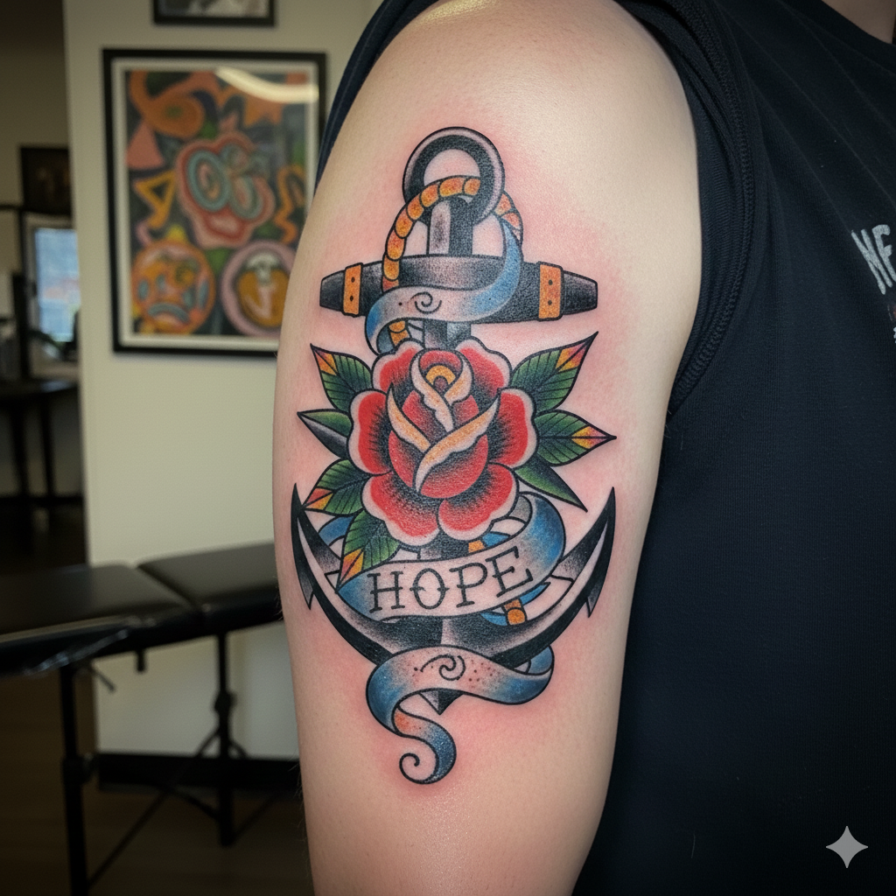

Estilo Traditional / Old School
1

Estilo Traditional / Old School
O estilo Traditional (também conhecido como Old School) é a base histórica da tatuagem ocidental moderna. Ele se destaca por sua durabilidade e clareza visual.
Características Principais: Utiliza linhas pretas espessas e bem definidas (bold lines), uma paleta de cores limitada e sólida (preto, vermelho, amarelo, verde e, ocasionalmente, azul).
Temas Comuns: Ícones clássicos americanos e marítimos, como âncoras, rosas, corações, águias, pin-ups e andorinhas.
Propósito: É um estilo pensado para resistir ao tempo sem desbotar facilmente, mantendo o contraste e a legibilidade por décadas.